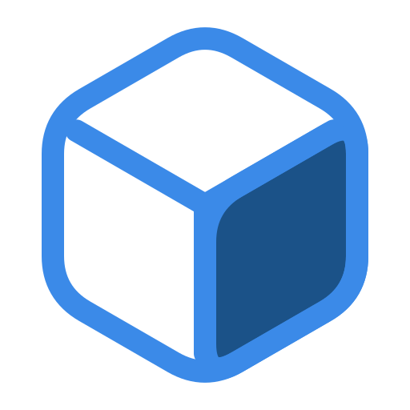

A card your app is saved under.
Crest answers GET /houseaccount.vcf with a contact card. A
phone offers to save it, and your next text arrives under a name instead of ten digits.
Gemfile
gem 'crest', '~> 0.1.0'
Below 1.0, so the pin stops short of
0.2.0. What is published today is documented at
rubydoc.info/gems/crest.
crest 'houseaccount.vcf'config/initializers/crest.rb
Crest.configure do |config| config.name = 'HouseAccount' config.url = 'https://houseaccount.com/' config.photo = Rails.root.join 'public/cube.png' config.phone = -> { Twilio.sender } end

HouseAccount HouseAccount, Inc.- mobile
- 800-555-0100
- support@houseaccount.com
- url
- houseaccount.com
That is the file the route above answers with, written by Crest itself. Open it on a phone and the contact sheet comes up.
MIT license
Built at
houseaccount